Welcome to the Ancient Capital
Discover one of the world's oldest cities — ancient souqs, Umayyad grandeur, and timeless Syrian hospitality
Years of History
Happy Visitors
Tour Packages
% Satisfaction
Explore the ancient wonders of Damascus, Syria's eternal capital
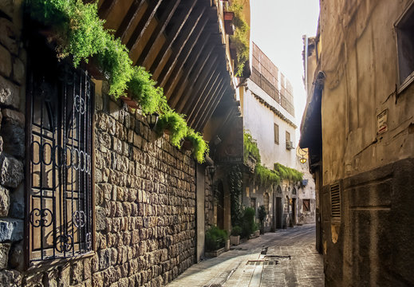
78$
A UNESCO World Heritage Site and one of the oldest continuously inhabited cities on earth. A labyrinth of ancient lanes, medieval khans, mosques, churches, and Ottoman palaces spanning 8,000 years.
Explore
67$
Built in 705 AD by Caliph Al-Walid I, the Umayyad Mosque is one of the largest and oldest mosques in the world, built over a 1st-century Roman temple and a Byzantine cathedral.
Explore
88$
Damascus's most famous covered market, stretching 600 metres through the heart of the old city. Built in the 19th century, it leads directly to the Umayyad Mosque through a grand arched iron roof.
Explore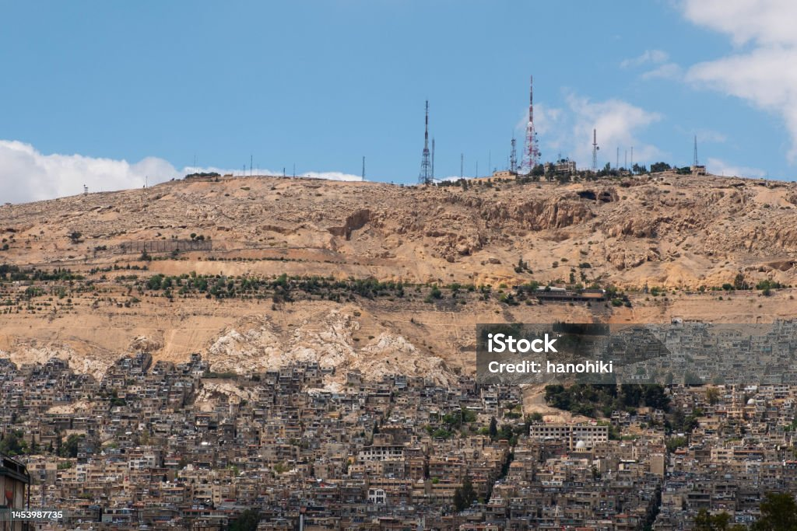
95$
The sacred mountain overlooking Damascus from 1,151m altitude. According to tradition, this is where Cain slew Abel. Today it offers the most spectacular panoramic views over the city, especially at night.
ExploreA visual journey through the ancient city of Damascus and its historic landmarks
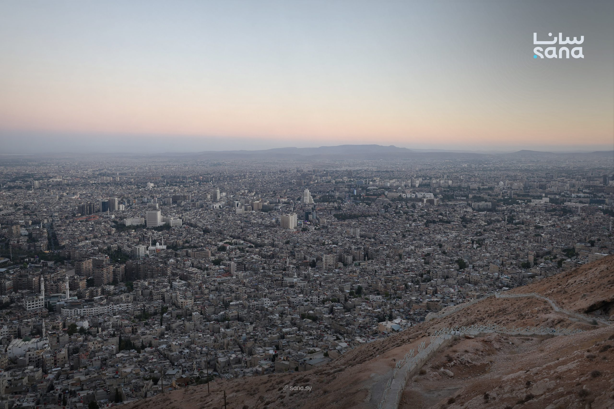

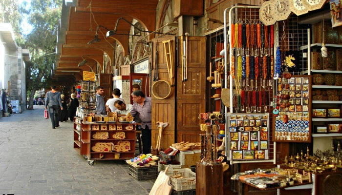
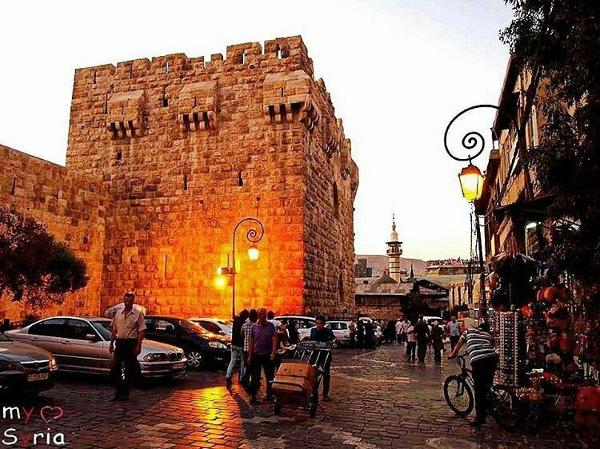
Heritage & Civilisation
Watch our introductory video to discover the ancient Umayyad Mosque, the bustling souqs, the Christian quarter of Bab Touma, and the vibrant street life that makes Damascus one of the world's most captivating cities.
Watch the Story
From the moment you arrive to the moment you leave, we handle every detail so you can focus on the experience.
Savour authentic Damascene cuisine — fatteh, kibbeh, shawarma, and Syrian sweets at family-run restaurants inside the Old City.
Air-conditioned vehicles with expert local guides. Direct routes from Damascus, Amman, or Beirut — door-to-door service available.
Experienced guides, comprehensive travel insurance, 24/7 emergency support, and well-marked trails at every archaeological site.
Dedicated tours timed for golden-hour light on the Umayyad Mosque minarets and Qasioun at night. Professional photographer-guides available.
Handpicked boutique hotels and guesthouses in restored Ottoman courtyard houses inside the Old City — sleep where history was made.
Mosaic restoration, traditional weaving, and Arabic calligraphy — learn from local artisans keeping 2,000-year-old crafts alive.
Plan around Damascus's seasons, festivals, and Mediterranean temperatures
Walk through the ancient lanes and markets of one of the world's oldest inhabited cities
Use mouse drag or touch to look around. Scroll to zoom. Click ⛶ fullscreen for best experience.
Find all sites and plan your perfect itinerary
Old City Gate → Umayyad Mosque → Azem Palace → Al-Hamidiyya Souq
~4 hoursUmayyad Mosque → Shrine of John the Baptist → Souq → Qasioun at night
Full DayAll 4 destinations with expert historians — Old City, Mosque, Souq & Qasioun
4 Days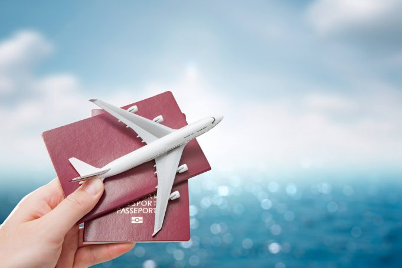
Check open spots and book your preferred date instantly
Click any available date to jump to the booking form. Max 12 guests per tour.
Check Availability →Stories, history, and seasonal highlights from Damascus
 Events
Events
Every spring, Damascus transforms as jasmine covers every doorway and street corner. Locals celebrate with open-air markets, folk music in the old city squares, and traditional sweets sold from every corner stall.
Read Article History
History
Built in 705 AD on a site that was once a Roman temple and later a Byzantine cathedral, the Umayyad Mosque holds secrets that most visitors walk right past. Here are ten surprising facts about this UNESCO treasure.
Read Article Destinations
Destinations
Overlooking Damascus from 1,151m, Mount Qasioun offers the most spectacular nighttime panorama in Syria. Here's exactly when to go, where to stand, and which lens to bring for the perfect city-light shot.
Read Article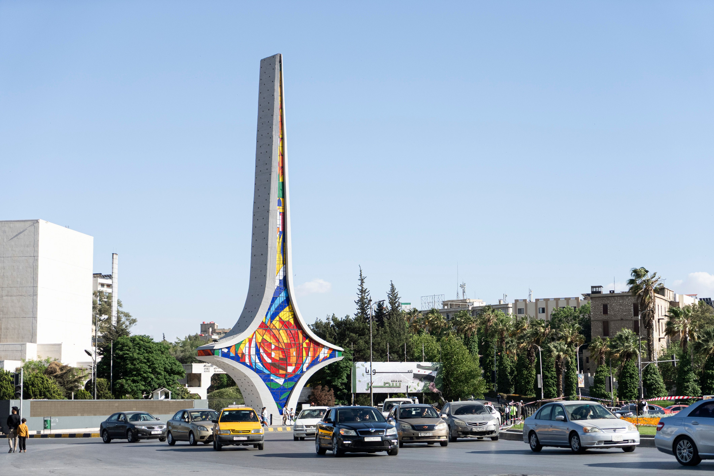
CultureFrom the coffee ceremony in a Damascene courtyard to the call to prayer echoing through the Umayyad Mosque, from the hammam ritual to the night-market dinner — a traveller's guide to experiencing Damascus like a local.
Read Article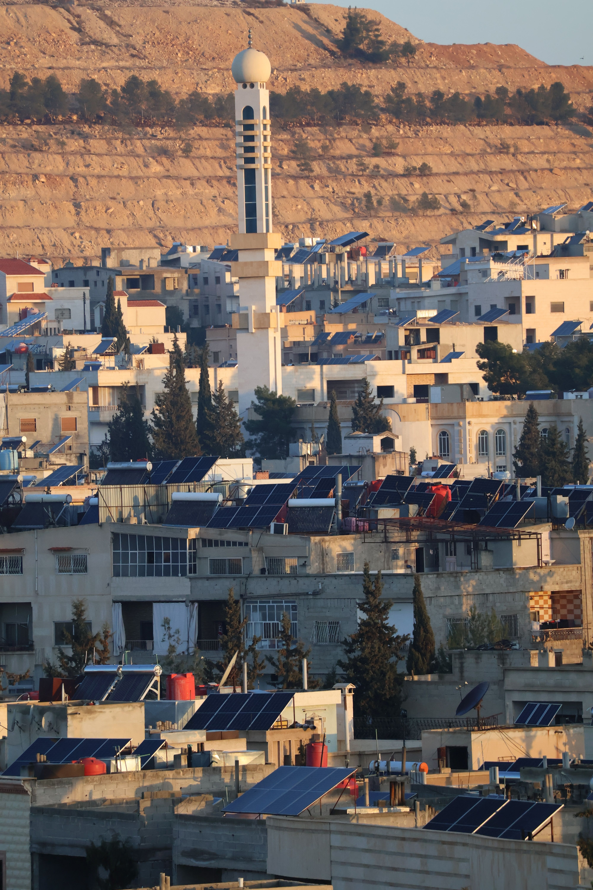
GuideHow to get there, what to wear, which neighbourhoods to stay in, what to eat, and which sites to prioritise — everything a first-time visitor needs to know before landing in Damascus.
Read Article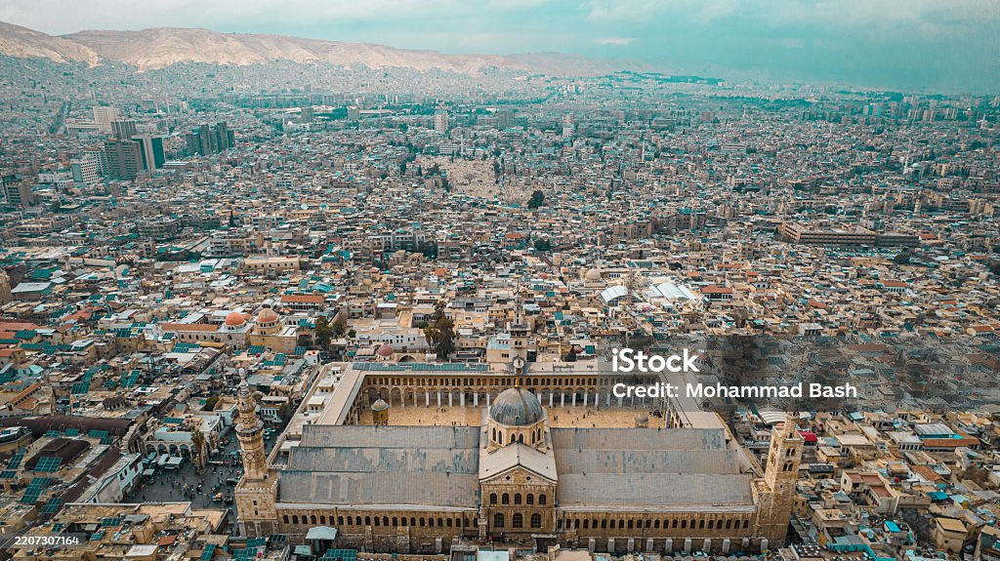
FoodFatteh, kibbeh, shawarma from the legendary Al-Sham vendors, baklava from Bab Touma, and the best spot for Syrian ice cream in the old souq. A food-lover's guide to eating Damascus like a local.
Read ArticleWhat visitors say about their Damascus experience
"Walking through the Umayyad Mosque at dawn, before the crowds arrive, is one of the most moving experiences of my life. The guides from Visit Damascus knew every story behind every stone. Absolutely unforgettable."
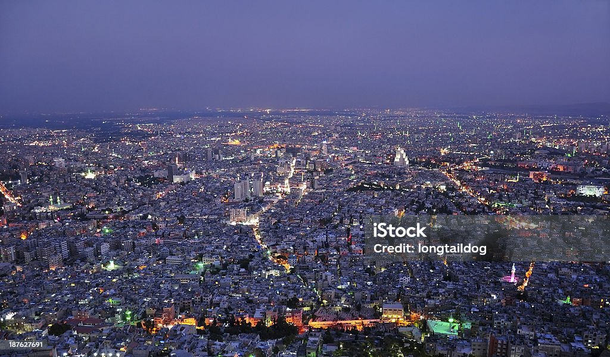
"The Old City of Damascus is an archaeologist's dream. We spent three full days there and still didn't see everything. The Azem Palace, the hammams, the hidden khans — world class. The booking process was seamless."
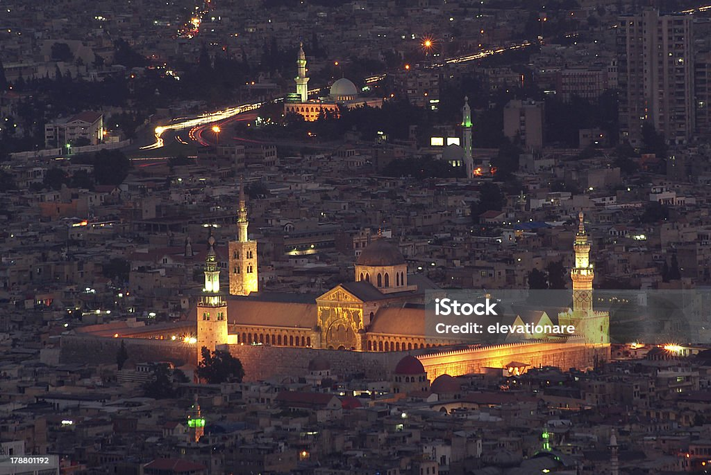
"Watching the city of Damascus light up at night from Mount Qasioun — thousands of lights stretching to the horizon — was the single most beautiful thing I've seen in five years of travel. Magical beyond words."
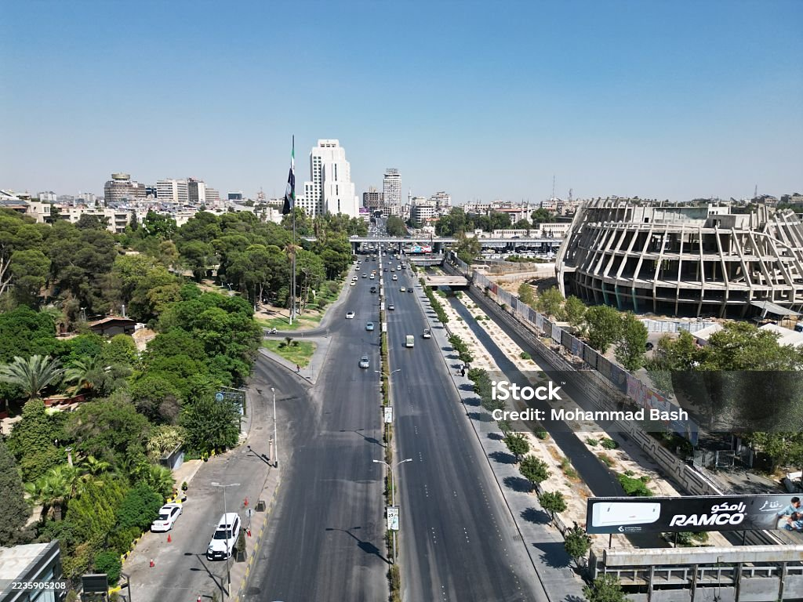
8,000 years of unbroken civilisation — the world's oldest continuously inhabited capital
Damascus (Dimashq) is among the oldest continuously inhabited cities on earth — settled since at least 6,000 BC in the Ghouta oasis. Ancient texts mention it as a major centre long before recorded history.
Damascus becomes the powerful capital of the Aramean kingdom of Aram-Damascus, a major force in the ancient Near East that traded, warred, and negotiated with Egypt, Assyria, and Israel for five centuries.
Pompey incorporates Damascus into the Roman province of Syria. The city flourishes as a major trading hub on the Silk Road. A great Temple of Jupiter is built — its ruins lie beneath the Umayyad Mosque today.
Damascus becomes a Christian city under Byzantine rule. The Roman temple is converted into the Cathedral of Saint John the Baptist — the direct predecessor of the Umayyad Mosque built on the same site in 705 AD.
Damascus becomes the capital of the Umayyad Caliphate — the first and greatest Islamic empire, stretching from Spain to Central Asia. Caliph Al-Walid I builds the Great Umayyad Mosque in 705 AD, one of the world's architectural masterpieces.
Saladin (Salah ad-Din) makes Damascus his capital after taking it from the Zengids. The city flourishes as a centre of Islamic scholarship, architecture, and trade. Saladin's tomb stands in a garden beside the Umayyad Mosque to this day.
The Ottoman Empire rules Damascus for four centuries. The city serves as the launch point for the annual Hajj pilgrimage caravan to Mecca. Al-Hamidiyya Souq — named after Sultan Abdülhamid II — is built in 1880, becoming the city's great covered bazaar.
Syria gains independence from the French Mandate on 17 April 1946 — celebrated as Evacuation Day. Damascus becomes the capital of the newly independent Syrian Arab Republic, continuing its role as one of the Arab world's most important political and cultural centres.
Damascus — UNESCO World Heritage Site since 1979 — remains one of the most historically layered cities on earth. Ancient mosques, Roman columns, Ottoman palaces, and Byzantine churches stand side by side in the Old City, welcoming visitors from around the world.
Visa requirements depend on your nationality. Most visitors require a Syrian tourist visa, obtained through a Syrian embassy or consulate in advance. We provide a full visa guidance document upon booking and can assist with invitation letters if required. Contact us before booking and we'll advise based on your passport.
Spring (March–May) is the most pleasant season in Damascus — temperatures range 15–25°C, the jasmine is in bloom, and the city's gardens and parks are at their most beautiful. Autumn (September–November) is equally wonderful.
All packages include: expert local guide (English & Arabic), air-conditioned transport, entrance fees to all sites, and traditional welcome lunch. Weekend and full packages also include handpicked accommodation and all breakfasts. Flights and international transport are not included. A full itemised breakdown is provided at booking.
We keep groups small by design — a maximum of 12 people per guide. This ensures a personal, unhurried experience at every site. Private tours for individuals, couples, or families are available at a modest supplement and can be tailored to any interest (archaeology, photography, food, or culture).
Cancellations made 14+ days before departure receive a full refund. Cancellations 7–13 days prior receive a 50% refund. Cancellations within 7 days are non-refundable, but you can transfer your booking to a future date at no cost. All bookings include free date-change up to 48 hours before departure.
Damascus has a long history of welcoming international visitors. The Old City and its major monuments — the Umayyad Mosque, Al-Hamidiyya Souq, and Mount Qasioun — are active, open sites. Our guides are local Damascus residents with deep community ties and up-to-date local knowledge. Comprehensive travel insurance is included in all packages, and we monitor conditions daily.
Yes. We offer pick-up from Damascus International Airport and from all major hotels in the city. Transfer coordination from Amman, Jordan (via the Nasib/Jaber border crossing) and from Beirut is also available on request. Simply mention your arrival point in the booking form and we will include transfer options in your personalised quote.
Made with by Aleen Alhussain | © 2024 Visit Damascus